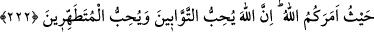

Hakk ile bâtıl bir arada olmaz.
İyiler dâimâ iyiler tarafına gider
Kötüler de kötülerden yana.
Şunu bil ki, hayra meyledip şerden kaçmak akıllara yerleştirilmiş bir melekedir. O
halde aklı başında olan insanın iyice düşünmesi gerekir, zira kendini görebilen, hâlini
düşünebilen kişi, hakka muhâlif yollara çağıran arkadaşlarından uzak kalır ve hevâ,
heves dâvetçisine karşı çıkar. Kibar-ı acem’den biri: “Allah bes, bâki heves” demiştir.
Yâni Allah yeter, O’ndan başkası boştur, aldanma!
Cenâb-ı Allah şöyle buyurmuştur: “İnsanlardan hangisinin ameli daha güzel,
onları imtihan edelim diye, biz yeryüzünde olan şeylere, kendilerine mahsûs bir
zinet verdik.” (el-Kehf, 18/7) Mukarreb olanlar, varlık âleminde neler varsa hepsini
bırakıp, Allah’a koşarlar ve Allah rızâsından başka hiçbir şeye iltifat etmezler. İşte
bunlar, niyetleri güzel ve amelleri sâlih kimselerdir. Bunların üzerinde yürüdükleri yol
da sırat-ı müstakîmdir.
Allah’ım! Bize doğruyu ilham et, nefislerimizin şerrinden bizi koru. Muhakkak ki,
yalvarışlara cevap verecek sensin!
222. Sana kadınların ay hâlinden sorarlar. De ki: O, bir rahatsızlıktır. Bu sebeple
ay hâlinde olan kadınlardan uzak durun. Temizleninceye kadar onlara yaklaşmayın.
Temizlendikleri vakit, Allah’ın size emrettiği yerden onlara yaklaşın. Şunu iyi bilin
ki, Allah tevbe edenleri de sever, temizlenenleri de sever.
“Mahîz”, “mecî’” ve “mebît” gibi masdar bir kelimedir. Hayz ise belli vakitlerde
rahimden gelen pislik ve kirliliktir. Sahâbe-i kirâmın bu suâlden maksadları, hayız
hâlindeki kadınlarla birlikte olunup olunamayacağını öğrenmektir. Bu sebeple sorunun
cevâbında: “De ki, hayız insanı tiksindiren ve yakınında bulunana ezâ ile nefret veren
bir durumdur”, denilmiştir.
Rivâyet olunduğuna göre, cahiliye döneminde insanlar, mecûsîlerin ve yahûdîlerin
yaptığı gibi, hayızlı olan kadınları evlerinde barındırmazlar ve onlarla berâber yiyip
içmezlerdi. İslâm geldikten sonra durum aynı şekilde devam etti. Nihâyet Ebu’d-
Dahdâh bir grup sahâbe içinde Rasûlullah (s.a.)’e: “Ey Allah’ın Rasûlü! Hayızlı
kadınlara karşı nasıl davranalım? Onlara yaklaşalım mı, yaklaşmayalım mı?” diye
sordu. Bunun üzerine: “Ay hâlinde olan kadınlardan uzak durun (onlarla cinsî temasta